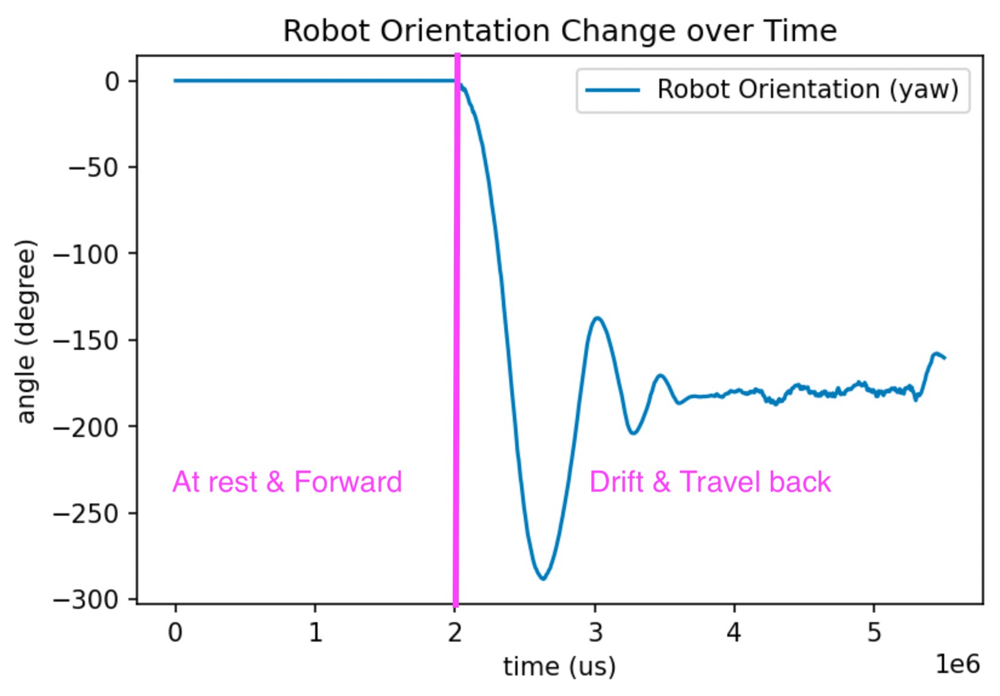
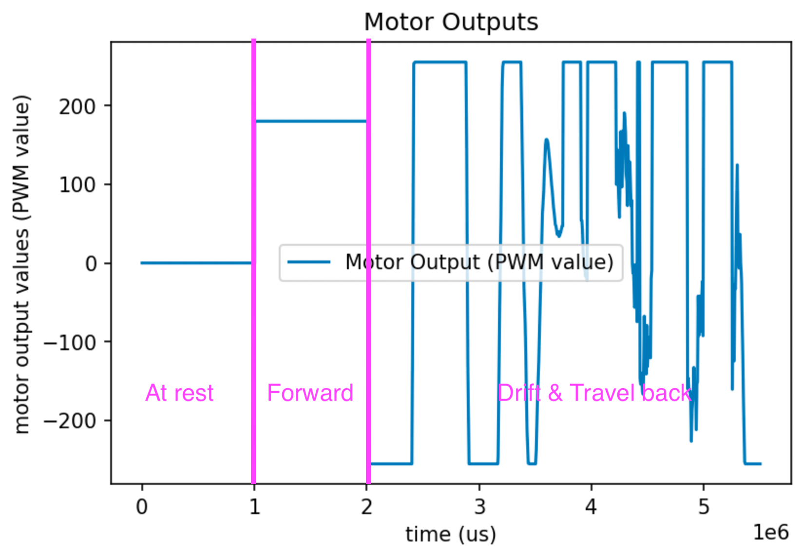

The purpose of this lab is to combine both lab 6 and lab 7 to make stunts more reliable and faster. This lab has two components. The first component is the controlled stunt, which I have chosen to do the drifting task. The second component is an open loop, repeatable stunt.
Controlled Stunt
Task requirements and the plan
In this stunt, the robot will start at a designated line (less than 4m from the wall), drive fast forward, and initiate a 180 degree turn with drift such that before it starts driving backward, it reaches a distance 0.6m from the wall. There are two key components in successfully completing this lab: (a) correctly (and quickly) estimate the distance from the wall such that the robot initiates the drift-turn on time, and (b) to make the 180 degree turn correctly and quickly.
Part (b) is accomplished successfully in lab 6. A PID controller is used to control the orientation of the robot. However, the robot in lab 6 does not measure its distance to the wall. The robot is programmed to travel forward for a finite amount of time and initiate the turn after. However, due to the robot's movement being less repeatable in high speed, this timing-based method no longer works for the robot when travelling forward at a faster speed. Besides, it is not reliable, and the robot may hit the wall the break itself. The video below is from lab 6, it shows the best I could do with the timing-based method. Video from lab 6: robot stunt with only PID control. No Kalman filter is implemented.
Part (a) requires using the Kalman filter from lab (7) to estimate the distance between the robot and the wall. The ToF sensor readings (about 50 ms per sample) are very slow relative to the speed of the robot (which could be up to 4 m/s). If we only rely on the ToF sensor readings, the robot could initiate the turn up to 20 cm difference between the set distance, and it could potentially lead to catastrophic events. In this lab, the KF noise estimation are determined from lab 7. I am using sigma_1 = 20 mm, sigma_2 = 20 mm/s, sigma_z = 20 mm.
When there is no sensor readings, the distance is estimated only with the predictive step of the Kalman filter. When there is a new sensor reading, the distance is estimated with both the prediction and update step. This process is exactly the same as that in lab 7.
Implementation
Recall that in lab 6, my robot movement is divided into four different moves: travel_forward, drift, connect_ble, and send_data. Obviously, connect_ble and send_data needs the least modification because they have essentially no impact on the robot's actual movement.
The drift portion in lab 6 also needs no modification, because the Kalman filter only functions before the turn is initated. Once the turn is initiated, the PID controller takes care of the rest of the robot movement. Therefore, the only task left is to modify travel_forward. Here is my code snippet.
case travel_forward:
// travel forward
my_motors.car_straight(180);
// -------------------------------------
// KALMAN FILTER DISTANCE ESTIMATE BEGIN
// -------------------------------------
temp_time = micros();
delta_time = temp_time - global_time_now - global_time;
global_time_now = temp_time - global_time;
if (my_tof.measurement_ready(0)){ // sensor measurement available
update_step_counter++;
tof_distance = my_tof.get_measurement(0).distance;
// run both predictive and update step
kf(float(delta_time / 1e6), false, tof_distance);
} else{ // sensor measurement not available
predictive_step_counter++;
kf(float(delta_time / 1e6));
}
// -------------------------------------
// KALMAN FILTER DISTANCE ESTIMATE END
// -------------------------------------
// data logging
if (BLE_COLLECT)
{
ble_time_data[ble_data_idx] = global_time_now;
ble_tof_data[ble_data_idx] = tof_distance;
ble_motor_output[ble_data_idx] = motor_input;
ble_kf_data[ble_data_idx] = x_val(0);
ble_data_idx++;
}
// the distance to initiate the turn
if (x_val(0) less than 1600)
{
current_move = drift;
// ---------------------
// PRE PID SETUP
// ---------------------
// set current orientation
while (!my_imu.update_data())
{
};
my_imu.calc_ang();
current_orientation = my_imu.get_ang().yaw_gyr;
set_orientation = current_orientation - 180;
// initialize the orientation difference arr
for (int i = 0; i less than lookback_samples; i++)
{
orientation_difference[i] = 360; // set to absurdly large values
}
if (DBG_MODE){Serial.print("\nEntered brake state.");}
}
break;
In the code snippet, the travel_forward no longer uses the delay() function. It now first checks if the ToF reading is available. If not, only the predictive step of the KF is run. If it is available, then both steps are run. At the end of the execution of the KF filter, x_val(0) contains the estimated distance between the robot and the wall. If this distance is less than a certain value, the robot initiates the turn by changing current_move = drift.
Results
The video below shows my stunt is working well. The robot travels fast. It initiates the turn at just the right distance such that it touches the 0.6m mark. FIXME OWEN: Placeholder
Data are also recorded in the process. The ToF sensor readings, KF estimation, robot orientation estimated by gyroscope, and the motor input including in the step (forward) stage and the PID turning stage are all recorded. We will look at the graphs one by one. The picture below shows the ToF sensor reading and the KF estimation plotted over time. In this plot, when a ToF reading is not available, the last available ToF reading is used. This is why the ToF (blue line) is showing step-like patterns. On the other hand, the Kalman filter estimation is pretty smooth, and it agrees very well with ToF readings. This is saying that our dynamic model and our Kalman filter is working very well. Note that both the ToF line and the KF line suddenly drops to zero when the KF estimation touches 1600 mm. That is when the robot has entered the turning stage. In the turning stage, the PID controller is responsible for determining the movement of the robot. ToF readings and KF estimations are no longer available in the turning stage.
 Plot of Kalman filter estimatino distance of the robot from the wall and ToF readings. When the ToF reading is not available, the last available ToF reading is used.
The picture below shows robot orientation (yaw) calculated by gyroscope accumulation. In the
Plot of Kalman filter estimatino distance of the robot from the wall and ToF readings. When the ToF reading is not available, the last available ToF reading is used.
The picture below shows robot orientation (yaw) calculated by gyroscope accumulation. In the travel_forward phase, IMU readings are not taken, but since we assume the robot is travelling in a straight line, I set it to zero. IMU readings become available in the drifting stage. We see that the robot's orientation oscillates and converges to 180 degree (the target orientation for the PID controller). Then the robot starts travelling toward the direction it came from.

Plot of robot orientation change over time estimated by gyroscope accumulation.
The picture below shows motor input (PWM value) over time. In the beginning, the robot is in the still stage, so the motor input is 0. Then the robot enters the travel_forward stage, where the motor input value is a constant 180. In the drifting stage, the motor input is first determined by the PWM controller to move the robot's orientation to the target orientation. When the orientation is closed enough, the motor input is a constant 255 to travel back as fast as it can.

Plot of motor input (including forward stage and PID turning stage).
Open loop stunt